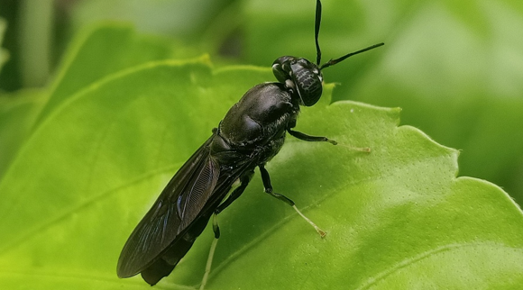

La mosca soldado negra es un insecto de cuerpo alargado, color negro y apariencia similar a una avispa. Presenta dos alas, antenas largas y pequeñas áreas translúcidas en el primer segmento abdominal. Sus larvas se alimentan de materia orgánica en descomposición, como residuos vegetales y estiércol, contribuyendo a su transformación y reciclaje. Es una especie de gran importancia en la agricultura y la gestión de residuos orgánicos.